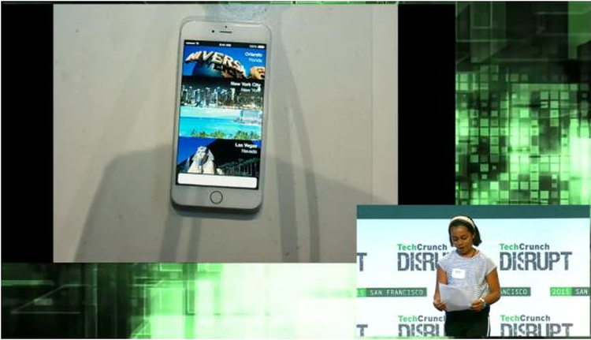

Getaways
How it started:TechCrunch Disrupt
Duration:
From September 2015-Now
Objective:This hackathon where startups were instructed to sign up to pitch their business ideas on a stage in front of venture capital investors, media and other interested parties for prize money and publicity.
Type of Project:App/Startup
For this project, we were given a challenge to make and create an application using a travel API (Skyscanner) and a business within one weekend. Being a 5th grader, I didn't really expect to recive anything, but with inspiration and huge help from my father, I created Getaways, a travel app "brought to your wrist" through a WatchOS application. The goal of the app was to be an easy way for tourists to book activities in an easy and accesible way. It is an app available on your Apple watch and uses Skyscanner's hotel API kit, has many feathures, such as 360 degree preview for each activity before the user books it, so they can experience it as if they were there! This app won $1,000 and was the start to this journey with Getaways. We were able to realease this app onto the app store, as it ended up grossing over 40,000 donloads, and is still active. See below for more on Getaways!! Click here to go to my interview and article with Skyscanners board.
